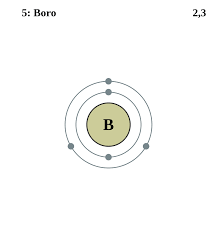
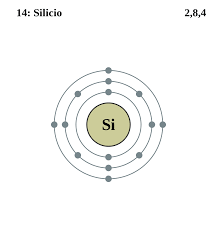
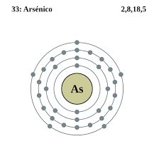
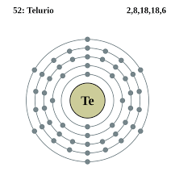
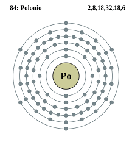
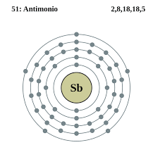

Junto con los metales y los no metales, los semimetales (también conocidos como metaloides) comprenden una de las tres categorías de elementos químicos siguiendo una clasificación de acuerdo con las propiedades de enlace e ionización. Se caracterizan por presentar un comportamiento intermedio entre los metales y los no metales, compartiendo características de ambos. Por norma general y en la mayoría de los casos, tienden a reaccionar químicamente con no metales, aunque hay ciertos compuestos formados por metal y semimetal como por ejemplo el boruro de magnesio. Pueden ser tanto brillantes como opacos, y su forma puede cambiar fácilmente.
El boro es un elemento químico de la tabla periódica de los elementos que tiene el símbolo B y número atómico 5, su masa es de 10,811. Es un elemento metaloide, semiconductor, trivalente que existe abundantemente en el mineral bórax.
Número atómico: 5
Electrones por nivel: 2,3
Masa atómica: 10,811 u
Configuración electrónica: [He] 2s²2p¹
Descubrimiento: 30 de junio de 1808
Descubridores: Louis Joseph Gay-Lussac, Humphry Davy, Louis Jacques Thénard
El silicio es un elemento químico metaloide, número atómico 14 y situado en el grupo 14 de la tabla periódica de los elementos de símbolo Si. Es el segundo elemento más abundante en la corteza terrestre después del oxígeno.
Masa atómica: 28,0855 u
Configuración electrónica: [Ne] 3s²3p²
Número atómico: 14
Electrones por nivel: 2, 8, 4
Descubrimiento: 1824
Descubridores: Antoine Lavoisier, Jöns Jacob Berzelius
El germanio es un elemento químico con número atómico 32, y símbolo Ge perteneciente al período 4 de la tabla periódica de los elementos. Es un metaloide blanco grisáceo, brillante, duro y quebradizo en el grupo del carbono, químicamente similar a su grupo vecino, el silicio y el estaño.
Configuración electrónica: [Ar] 3d¹⁰4s²4p²
Número atómico: 32
Masa atómica: 72,64 u
Electronegatividad: 2,01
Descubrimiento: 1886
Descubridor: Clemens Winkler
El arsénico es un elemento químico con el símbolo As y el número atómico 33. El arsénico se encuentra en muchos minerales, generalmente en combinación con azufre y metales, pero también como un cristal elemental puro. El arsénico es un metaloide.
Configuración electrónica: [Ar] 3d¹⁰4s²4p³
Número atómico: 33
Masa atómica: 74,9216 u
Electronegatividad: 2,18
Descubrimiento: 1250
Descubridor: Alberto Magno
El telurio o teluro es un elemento químico cuyo símbolo es Te y su número atómico es 52. Es un semimetal que se encuentra en el grupo 16 y el periodo 5 de la Tabla periódica de los elementos.
Número atómico: 52
Electrones por nivel: 2,8,18,18,6
Configuración electrónica: [Kr] 4d105s25p4
Masa atómica: 127,6 u
Electronegatividad: 2,1
Descubrimiento: 1782
El polonio es un elemento químico en la tabla periódica de los elementos cuyo símbolo es Po y su número atómico es 84. Se trata de un raro metal altamente radiactivo, químicamente similar al telurio y al bismuto, presente en minerales de uranio.
Número atómico: 84
Electrones por nivel: 2,8,18,32,18,6
Configuración electrónica: [Xe] 6s24f145d106p4
Masa atómica: 209 u
Electronegatividad: 2
Descubrimiento: 1898
El antimonio es un elemento químico que forma parte del grupo de los metaloides de número atómico 51 situado en el grupo 15 de la tabla periódica de los elementos. Su nombre y abreviatura procede de estibio, término hoy ya en desuso, que a su vez procede del latín stibium. Su principal mena es la estibina.
Configuración electrónica: [Kr] 4d105s25p3
Número atómico: 51
Masa atómica: 121,76 u
Electronegatividad: 2,05
Punto de fusión: 630,6 °C
Descubrimiento: 1600 a. C.
